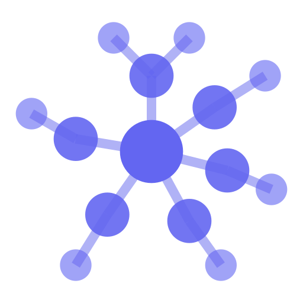

Computadora
Instalá la extensión y conectá tu identidad.
Instalar Nostr WoT ↗
Nostr WoT LABTu perfil, tus publicaciones y tus conexiones. Con Nostr WoT en tu navegador o en tu teléfono.
Empezar
Instalá la extensión y conectá tu identidad.
Instalar Nostr WoT ↗Instalá la app y aprobá desde tu teléfono.
Esperando el APK firmado del tallerSolicitá tu invitación con el email de tu Apple ID.
Invitación gestionada por emailExtensión o app: tus claves se quedan en Nostr WoT.
Entrá con la misma cuenta en otras apps. Elegí qué permiso dar en cada una.
Probá Obelisk para conversar y Sky para descubrir otra forma de usar Nostr.
Abrir Obelisk Abrir SkyAbrí La Wallet para conocer el flujo de pagos. Cualquier movimiento de dinero lo decidís vos en la wallet.
Abrir La WalletPara repetir la práctica en una computadora, descargá el kit. Incluye instrucciones para abrirlo localmente.
Descargar copia